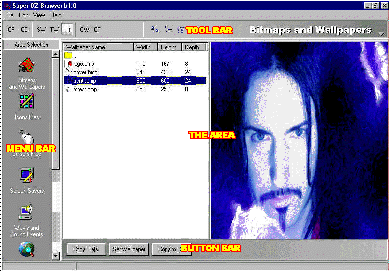

Super OZ Multimedia Browser |
|
Super OZ Multimedia Browser |
|
Welcome to the Super OZ Multimedia file browser. This browser provides an easy to use interface, allowing you to view the content found on your CD, quickly and conveniently. Here you will find a description of each of the area sections contained on the CD and a link to their relevant help sections.
Included on the CD are bonus sample files from other CDs in the Super Oz Multimedia range. These files have been included to demonstrate all features of the Super Oz Multimedia file browser, to give you an example of what is on our other multimedia CDs and to provide you with some useful multimedia files.
Residents of Victoria, Australia might like to check out our sister company's ISP service: Sprint Online. Australia's first ISP to implement USRobotics X2 56k Dial Up access. You can visit Victoria's premier supplier of Internet access at
http://www.sprint.com.au for more information or click on the "Sprint Online" button in the tools area to access their easy to use setup softwareOperation of the Multimedia Browser is separated into 4 main areas:
|
The MenuBar The ToolBar Extends across the top of the screen The Area The area right of the menu bar The ButtonBar The gradient shaded bar below the area |
 |
The MenuBar is situated on the left of the screen and extends for most of the vertical height of the application. Each button on the MenuBar represents an area within the MultiMedia Browser. Each of these areas has a specific function, usually to deal with the viewing and use of a particular file type such as AVI videos or True Type fonts.
The ToolBar contains buttons that are used to select operations in a selected area. As you change from area to area you will notice the buttons on the toolbar will change to reflect the options available in the area you have selected
The largest area to the right of the application is the actual area selected on the MenuBar. Here you are usually shown a list-view containing files and file categories. Anyone familiar with explorer should be at home using the list-views for each area.
The ButtonBar sits below the area and contains some of the functions for the area. Most of the functions on the ButtonBar also have a corresponding button situated on the ToolBar.
To use the Browser, simply select an area on the MenuBar, and use the ButtonBar and ToolBar to operate on files selected in the list-view.
Bitmaps and Wallpapers
This is where you can view and copy bitmaps and wallpapers. You can also set your Desktop Wallpaper from any of the pictures contained in this area
Icon Files
This is where you can view icon files. You can also change your system icons and their names here. i.e. The "My Computer" icon (and others) on your desktop can have its icon and name changed here. The following system icons can be changed in this area:
My Computer
Network Neighborhood
Recycle Bin
Recycle Bin (full)
Control Panel
Printers
Dial Up-Networking
Cursor Files
This is where you can view normal and animated cursors for windows. You can also set any of the default system cursors here and preview cursors without the need for installation.
Screen Savers
Here you can view screen savers and change their properties. You are able to preview uninstalled screen savers, change their settings, install them, and change the settings of the current screen saver.
Wave and Midi Files
This area allows you to listen to wav audio files and midi files. You can also set the sound events for applications registered within windows.
Gif's, Jpeg's and Textures
This is where you view Jpeg and Gif pictures. These pictures are intended for use on the web. Static, Animated, and tiled previews are available for all these files.
Avi Movie Files
Here you can view AVI video files with the option to either view the files in a preview screen within the browser, or in a separate window.
System Fonts
In this area you can view and install true type font files. Previews are available, with definable text and point size for the fonts, even before installation.
Tools and Utilities
In this area you can install all sorts of lovely tools and utilities.
Cleaning
This is where all the files you have copied from the CD to your system are recorded. Here you can quickly remove the files installed onto your hard disk.
Browser Help
You are reading the browser help now.
|
Sprint Enterprises |
Sprint Software |
Sprint Online |
|
Windows95.com |
Game Spot |
Adrenaline Vault |
|
Programming: |
Compilation: Tim Franzke tim@sprint.com.au |
Beta Testing: Tim Franzke tim@sprint.com.au |
If you are experiencing troubles operating this browser please report all bug reports to:
adam@sprint.com.auPlease check our product information
page for any possible updates or enhancements to this product: